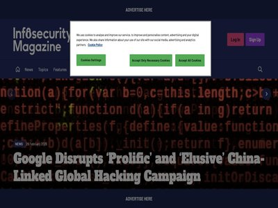
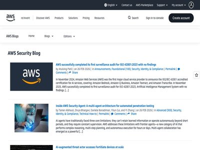
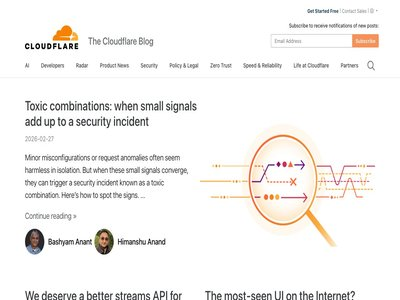
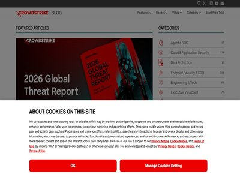

Microsoft Fixes Two Publicly Disclosed Zero-Days
March 11, 2026
March Patch Tuesday sees Microsoft release updates for 79 flaws (Infosecurity Magazine)
Microsoft Patches 84 Flaws in March Patch Tuesday, Including Two Public Zero-Days
March 11, 2026
Microsoft on Tuesday released patches for a set of 84 new security vulnerabilities affecting various software components, including two that have been listed as publicly known.... (The Hacker News)
Armis improves vulnerability accuracy and speed with unified real-time visibility
March 11, 2026
Armis has announced Armis Centrix for Vulnerability Management Detection and Response. The solution enables security teams to identify and validate vulnerabilities across all or... (Help Net Security)
KadNap bot compromises 14,000+ devices to route malicious traffic
March 11, 2026
KadNap malware infects 14,000+ edge devices, mainly Asus routers, turning them into a stealth proxy botnet used to route malicious internet traffic. KadNap malware infects more... (Security Affairs)
Virtana enables full-stack root cause analysis beyond legacy APM
March 11, 2026
Virtana has launched an Application Observability offering that traces performance issues from application code through infrastructure, networks, storage, and AI workloads to de... (Help Net Security)
Forescout replaces manual audits with automated, always-on compliance validation
March 11, 2026
Forescout Technologies has announced Automated Security Controls Assessment, a new Forescout 4D Platform capability that continuously evaluates trust, control effectiveness and... (Help Net Security)
OPSWAT delivers AI-powered perimeter defense with unified zero-day verdicts
March 11, 2026
OPSWAT has introduced MetaDefender Aether, an AI-powered decision engine for fast zero-day detection, purpose-built for the perimeter. Unlike sandbox or antivirus solutions desi... (Help Net Security)
Secureframe automates CMMC compliance with secure infrastructure and AI SSPs
March 11, 2026
Secureframe has launched Secureframe Defense, an end-to-end solution for CMMC certification. It provides secure infrastructure deployment, AI-generated System Security Plans (SS... (Help Net Security)
ICS Patch Tuesday: Vulnerabilities Fixed by Siemens, Schneider, Moxa, Mitsubishi Electric
March 11, 2026
Industrial giants Siemens, Schneider Electric, Mitsubishi Electric, and Moxa have published new ICS Patch Tuesday advisories. The post ICS Patch Tuesday: Vulnerabilities Fixed b... (SecurityWeek)
UNC6426 Exploits nx npm Supply-Chain Attack to Gain AWS Admin Access in 72 Hours
March 11, 2026
A threat actor known as UNC6426 leveraged keys stolen following the supply chain compromise of the nx npm package last year to completely breach a victim's cloud environment wit... (The Hacker News)
Middle East Conflict Highlights Cloud Resilience Gaps
March 11, 2026
Data centers — used by both governments and militaries for operations — are now fair game, not just for cyberattacks, but for kinetic attacks as well. (Dark Reading)
'Overly Permissive' Salesforce Cloud Configs in the Crosshairs
March 10, 2026
Some customers have mishandled guest user configurations otherwise intended to allow third-party access to important — and sensitive — client data. (Dark Reading)

AWS European Sovereign Cloud achieves first compliance milestone: SOC 2 and C5 reports plus seven ISO certifications
March 10, 2026
In January 2026, we announced the general availability of the AWS European Sovereign Cloud, a new, independent cloud for Europe entirely located within the European Union (EU),... (AWS Security Blog)
New 'Zombie ZIP' technique lets malware slip past security tools
March 10, 2026
A new technique dubbed "Zombie ZIP" helps conceal payloads in compressed files specially created to avoid detection from security solutions such as antivirus and endpoint detect... (BleepingComputer)
Microsoft Patches 83 Vulnerabilities
March 10, 2026
Microsoft has fixed a critical vulnerability, but none of the flaws fixed this Patch Tuesday has been exploited in the wild. The post Microsoft Patches 83 Vulnerabilities appear... (SecurityWeek)
Attackers exploit FortiGate devices to access sensitive network information
March 10, 2026
Attackers are exploiting FortiGate devices to breach networks and steal configuration data containing service account credentials and network details. SentinelOne researchers wa... (Security Affairs)
Russian Threat Actor Sednit Resurfaces With Sophisticated Toolkit
March 10, 2026
After several years of using simple implants, the Russia-affiliated actor is back with two new sophisticated malware tools. (Dark Reading)
Cloud Attackers Now Prefer Vulnerability Exploits Over Credentials, Google Cloud Finds
March 10, 2026
Google Cloud report details a sharp rise in attackers exploiting software vulnerabilities, including React2Shell (Infosecurity Magazine)
Microsoft brings phishing-resistant Windows sign-ins via Entra passkeys
March 10, 2026
Microsoft is rolling out passkey support for Microsoft Entra on Windows devices, adding phishing-resistant passwordless authentication via Windows Hello. [...] (BleepingComputer)
APT28 conducts long-term espionage on Ukrainian forces using custom malware
March 10, 2026
APT28 used BEARDSHELL and COVENANT malware to spy on Ukrainian military personnel, enabling long-term surveillance since April 2024. The Russia-linked group APT28 (aka UAC-0001,... (Security Affairs)
Kai Emerges From Stealth With $125M in Funding for AI Platform Bridging IT and OT Security
March 10, 2026
The company was created by a Claroty founder and is backed by Evolution Equity Partners, N47, and other investors. The post Kai Emerges From Stealth With $125M in Funding for AI... (SecurityWeek)
Fortinet enhances SecOps with cloud SOC, AI automation, and managed services
March 10, 2026
Fortinet has announced major innovations across the Fortinet Security Operations (SecOps) Platform. The updates feature next-generation SecOps advancements, including expanded a... (Help Net Security)
Webinar Today: Securing Fragile OT in an Exposed World
March 10, 2026
Join the webinar as we examine the current OT threat landscape and move past the "doom and gloom" to discuss the mechanics of modern OT exposure. The post Webinar Today: Securin... (SecurityWeek)
New KadNap botnet hijacks ASUS routers to fuel cybercrime proxy network
March 10, 2026
A newly discovered botnet malware called KadNap is targeting ASUS routers and other edge networking devices to turn them into proxies for malicious traffic. [...] (BleepingComputer)
Ericsson Breach Exposes Data of 15k Employees and Customers
March 10, 2026
Ericsson data breach affects 15k employees/customers after third-party service provider compromise (Infosecurity Magazine)
Mend.io eliminates AI prompt weaknesses before production
March 10, 2026
Mend.io has launched System Prompt Hardening within Mend AI to detect, score, and automatically remediate weaknesses in AI system prompts. Hidden instructions in system prompts... (Help Net Security)
AWS Security Hub is expanding to unify security operations across multicloud environments
March 10, 2026
After talking with many customers, one thing is clear: the security challenge has not gotten easier. Enterprises today operate across a complex mix of environments, including on... (AWS Security Blog)
SAP Patches Critical FS-QUO, NetWeaver Vulnerabilities
March 10, 2026
A code injection bug in FS-QUO and an insecure deserialization flaw in NetWeaver could lead to arbitrary code execution. The post SAP Patches Critical FS-QUO, NetWeaver Vulnerab... (SecurityWeek)
Thousands Affected by Ericsson Data Breach
March 10, 2026
The telecommunications equipment and services giant has blamed the incident on a third-party vendor. The post Thousands Affected by Ericsson Data Breach appeared first on Securi... (SecurityWeek)
The New Turing Test: How Threats Use Geometry to Prove 'Humanness'
March 10, 2026
Malware is evolving to evade sandboxes by pretending to be a real human behind the keyboard. The Picus Red Report 2026 shows 80% of top attacker techniques now focus on evasion... (BleepingComputer)
'BlackSanta' EDR Killer Targets HR Workflows
March 10, 2026
A campaign by Russian-speaking cyberattackers hijacks workflows to deliver security-busting malware, allowing attackers to steal data without detection. (Dark Reading)
OpenAI Rolls Out Codex Security Vulnerability Scanner
March 10, 2026
Codex Security, formerly Aardvark, has found hundreds of critical vulnerabilities in tested software in the past month. The post OpenAI Rolls Out Codex Security Vulnerability S... (SecurityWeek)
Kevin Mandia’s Armadin Launches With $190 Million in Funding
March 10, 2026
Armadin uses AI-powered red teaming to find and exploit weaknesses in the same way that attackers attack them. The post Kevin Mandia’s Armadin Launches With $190 Million in Fund... (SecurityWeek)
New "LeakyLooker" Flaws in Google Looker Studio Could Enable Cross-Tenant SQL Queries
March 10, 2026
Cybersecurity researchers have disclosed nine cross-tenant vulnerabilities in Google Looker Studio that could have permitted attackers to run arbitrary SQL queries on victims' d... (The Hacker News)

Investigating multi-vector attacks in Log Explorer
March 10, 2026
Log Explorer customers can now identify and investigate multi-vector attacks. Log Explorer supports 14 additional Cloudflare datasets, enabling users to have a 360-degree view o... (Cloudflare Blog)
Building a security overview dashboard for actionable insights
March 10, 2026
Cloudflare's new Security Overview dashboard transforms overwhelming security data into prioritized, actionable insights, empowering defenders with contextual intelligence on vu... (Cloudflare Blog)
Ericsson US confirms breach after third-party provider attack
March 10, 2026
Ericsson US reports a data breach after attackers hacked a service provider, exposing employee and customer information. Ericsson Inc., the U.S. branch of the Swedish telecom gi... (Security Affairs)
Law enforcement disrupted Tycoon 2FA phishing-as-a-service platform
March 10, 2026
Authorities disrupted the Tycoon 2FA phishing-as-a-service platform used to send millions of phishing emails to over 500,000 orgs worldwide. The joint effort, led by Microsoft,... (Security Affairs)
Threat Actors Mass-Scan Salesforce Experience Cloud via Modified AuraInspector Tool
March 10, 2026
Salesforce has warned of an increase in threat actor activity that's aimed at exploiting misconfigurations in publicly accessible Experience Cloud sites by making use of a custo... (The Hacker News)
CISA Flags SolarWinds, Ivanti, and Workspace One Vulnerabilities as Actively Exploited
March 10, 2026
The U.S. Cybersecurity and Infrastructure Security Agency (CISA) on Monday added three security flaws to its Known Exploited Vulnerabilities (KEV) catalog, based on evidence of... (The Hacker News)
Translating risk insights into actionable protection: leveling up security posture with Cloudflare and Mastercard
March 10, 2026
Cloudflare will be integrating Mastercard’s RiskRecon attack surface intelligence capabilities to help you eliminate Internet-facing blind spots while continuously monitoring an... (Cloudflare Blog)

March 2026 Patch Tuesday: Eight Critical Vulnerabilities and Two Publicly Disclosed Among 82 CVEs Patched
March 10, 2026
(CrowdStrike Blog)
'InstallFix' Attacks Spread Fake Claude Code Sites
March 09, 2026
A fresh cyberattack campaign blends malvertising with a ClickFix-style technique that highlights risky behavior with AI coding assistants and command-line interfaces. (Dark Reading)
Can the Security Platform Finally Deliver for the Mid-Market?
March 09, 2026
Mid-market organizations are constantly striving to achieve security levels on a par with their enterprise peers. With heightened awareness of supply chain attacks, your custome... (The Hacker News)
New Attack Against Wi-Fi
March 09, 2026
It’s called AirSnitch : Unlike previous Wi-Fi attacks, AirSnitch exploits core features in Layers 1 and 2 and the failure to bind and synchronize a client across these and highe... (Schneier on Security)
TriZetto Provider Solutions Breach Hits 3.4 Million Patients
March 09, 2026
Billing services provider TriZetto Provider Solutions has begun notifying millions of patients about a data breach (Infosecurity Magazine)
Chrome Extension Turns Malicious After Ownership Transfer, Enabling Code Injection and Data Theft
March 09, 2026
Two Google Chrome extensions have turned malicious after what appears to be a case of ownership transfer, offering attackers a way to push malware to downstream customers, injec... (The Hacker News)
Ghanaian Pleads Guilty to Role in $100m Romance Scam
March 09, 2026
Derrick Van Yeboah admitted he stole over $10m in romance scams as part of crime gang (Infosecurity Magazine)
How AI Assistants are Moving the Security Goalposts
March 08, 2026
AI-based assistants or "agents" -- autonomous programs that have access to the user's computer, files, online services and can automate virtually any task -- are growing in popu... (KrebsOnSecurity)
North Korean APTs Use AI to Enhance IT Worker Scams
March 06, 2026
DPRK worker scams are old hat, but they're still working, thanks to AI tools that help with everything from face swapping to daily emails. (Dark Reading)
Anthropic and the Pentagon
March 06, 2026
OpenAI is in and Anthropic is out as a supplier of AI technology for the US defense department. This news caps a week of bluster by the highest officials in the US government to... (Schneier on Security)
Zero‑Day Attacks on Enterprise Software Reach Record High, Google Warns
March 06, 2026
Almost a quarter of the zero days detected by Google in 2025 targeted security and networking appliances (Infosecurity Magazine)
Claude Used to Hack Mexican Government
March 06, 2026
An unknown hacker used Anthropic’s LLM to hack the Mexican government: The unknown Claude user wrote Spanish-language prompts for the chatbot to act as an elite hacker, finding... (Schneier on Security)
Nation-State Actor Embraces AI Malware Assembly Line
March 05, 2026
Pakistan's APT36 threat group has begun using vibe-coding to churn out mediocre malware, but at a scale that could overwhelm defenses. (Dark Reading)
Tycoon 2FA Goes Boom as Europol, Vendors Bust Phishing Platform
March 05, 2026
The phishing-as-a-service platform was popular among cyber threat actors because of its ability to bypass multifactor authentication defenses. (Dark Reading)
AWS completes the 2026 annual Dubai Electronic Security Centre (DESC) certification audit
March 05, 2026
We’re excited to announce that Amazon Web Services (AWS) has completed the annual Dubai Electronic Security Centre (DESC) certification audit to operate as a Tier 1 Cloud Servic... (AWS Security Blog)
AI-Driven Insider Risk Now a “Critical Business Threat,” Report Warns
March 05, 2026
Malicious insiders are using misusing AI for nefarious gain, while employees cutting corners also creates risk, warns Mimecast (Infosecurity Magazine)
Coruna Exploit Kit Targets Older iPhones in Multi-Stage Campaigns
March 05, 2026
Exploit kit "Coruna" targets iPhones running iOS 13.0 to 17.2.1, focusing on financial data theft (Infosecurity Magazine)
CISA Adds Five Known Exploited Vulnerabilities to Catalog
March 05, 2026
CISA has added five new vulnerabilities to its Known Exploited Vulnerabilities (KEV) Catalog , based on evidence of active exploitation. CVE-2017-7921 Hikvision Multiple Product... (CISA Current Activity)
Zero-Click FreeScout Bug Enables Remote Code Execution
March 05, 2026
Ox Security warns that Mail2Shell could enable threat actors to hijack FreeScout systems without user interaction (Infosecurity Magazine)
Cisco Issues Patches for 48 Vulnerabilities in Enterprise Networking Products
March 05, 2026
Two of the 48 Cisco vulnerabilities, affecting Secure Firewall Management Center, are maximum-severity flaws (Infosecurity Magazine)
Europol Operation Seizes LeakBase Data Breach Site
March 05, 2026
A global operation has resulted in the takedown of popular cybercrime forum LeakBase (Infosecurity Magazine)
2025 ISO and CSA STAR certificates are now available with one additional service and one new region
March 05, 2026
Amazon Web Services (AWS) successfully completed the annual recertification audit with no findings for ISO 9001:2015, 27001:2022, 27017:2015, 27018:2019, 27701:2019, 20000-1:201... (AWS Security Blog)
Stranger Things Meets Cybersecurity: Lessons from the Hive Mind
March 04, 2026
Events and concepts from the Stranger Things television series illustrate how enterprises can defend their networks and stay "right side up." (Dark Reading)
Coalition of Western Countries Launches 6G Cybersecurity Guidelines
March 04, 2026
A coalition of seven Western nations has launched guidelines to help integrate security-by-design principles into future 6G standards (Infosecurity Magazine)
Global Takedown Neutralizes Tycoon2FA Phishing Service
March 04, 2026
Law enforcers and industry partners have taken down notorious phishing-as-a-service platform Tycoon2FA (Infosecurity Magazine)
Always-on detections: eliminating the WAF “log versus block” trade-off
March 04, 2026
Cloudflare is introducing Attack Signature Detection and Full-Transaction Detection to provide continuous, high-fidelity security insights without the manual tuning of tradition... (Cloudflare Blog)
Dark Reading Confidential: This Threat Hunter Helped Cops Bust Up An African Cybercrime Syndicate
March 04, 2026
Dark Reading Confidential Episode 15: Interpol relied on Will Thomas and team to help break up a sprawling cybercrime ring, leading to the arrest of 574 suspects, the recovery o... (Dark Reading)
Manipulating AI Summarization Features
March 04, 2026
Microsoft is reporting : Companies are embedding hidden instructions in “Summarize with AI” buttons that, when clicked, attempt to inject persistence commands into an AI assista... (Schneier on Security)
Calls for Global Digital Estate Standard as Posthumous Deepfake Fraud Risk Grows
March 04, 2026
The OpenID Foundation warns that fragmented policies on posthumous digital accounts could open the door for fraudsters to exploit AI deepfakes (Infosecurity Magazine)
Want More XWorm?, (Wed, Mar 4th)
March 04, 2026
And another XWorm[1] wave in the wild! This malware family is not new and heavily spread but delivery techniques always evolve and deserve to be described to show you how threat... (SANS ISC)
Indian APT 'Sloppy Lemming' Targets Defense, Critical Infrastructure
March 03, 2026
India-nexus cyber threat actors are growing more active and sophisticated, using custom tools coded in Rust and cloud-based command and control. (Dark Reading)
2025 PiTuKri ISAE 3000 Type II attestation report available with 183 services in scope
March 03, 2026
Amazon Web Services (AWS) is pleased to announce the issuance of the Criteria to Assess the Information Security of Cloud Services (PiTuKri) Type II attestation report with 183... (AWS Security Blog)
Israel: RedAlert Spyware Campaign Exploits Wartime Panic With Trojanized App
March 03, 2026
Espionage campaign exploits Israel-Iran conflict, distributing a trojanized Red Alert app via SMS (Infosecurity Magazine)
On Moltbook
March 03, 2026
The MIT Technology Review has a good article on Moltbook, the supposed AI-only social network: Many people have pointed out that a lot of the viral comments were in fact posted... (Schneier on Security)
CISA Adds Two Known Exploited Vulnerabilities to Catalog
March 03, 2026
CISA has added two new vulnerabilities to its Known Exploited Vulnerabilities (KEV) Catalog , based on evidence of active exploitation. CVE-2026-21385 Qualcomm Multiple Chipsets... (CISA Current Activity)
Huge “Shadow Layer” of Organizations Hit by Supply Chain Attacks
March 03, 2026
Black Kite reveals 26,000 unnamed corporate victims linked to 136 third-party breaches (Infosecurity Magazine)
Iranian Cyber Threat Actor Targets Iraqi Government Officials in AI-Powered Campaign
March 03, 2026
Zscaler ThreatLabz assessed with medium to high confidence that an Iranian adversary targeted Iraq’s Ministry of Foreign Affairs in a new cyber-attack (Infosecurity Magazine)
Critical OpenClaw Vulnerability Exposes AI Agent Risks
March 02, 2026
The now-patched flaw is the latest in a growing string of security issues associated with the viral AI tool, which has seen rapid adoption among developers. (Dark Reading)
Understanding IAM for Managed AWS MCP Servers
March 02, 2026
As AI agents become part of your development workflows on Amazon Web Services (AWS), you want them to work with your existing AWS Identity and Access Management (IAM) permission... (AWS Security Blog)
Expect Iran to Launch Cyber-Attacks Globally, Warns Google Head of Threat Intel
March 02, 2026
John Hultquist suggests “aggressive” Iranian cyber attackers will target the US and its Gulf allies with plausibly deniable ransomware attacks, hacktivist campaigns and more (Infosecurity Magazine)
LLM-Assisted Deanonymization
March 02, 2026
Turns out that LLMs are good at de-anonymization: We show that LLM agents can figure out who you are from your anonymous online posts. Across Hacker News, Reddit, LinkedIn, and... (Schneier on Security)
ClawJacked Bug Enables Covert AI Agent Hijacking
March 02, 2026
Oasis Security reveals how a new ClawJacked vulnerability could allow attackers to silently take over a victim’s OpenClaw agent (Infosecurity Magazine)
Ransomware Payments Decline 8% as Attacks Surge 50%
March 02, 2026
Chainalysis reveals a big surge in median ransomware payment size in 2025 despite overall drop in criminal revenue (Infosecurity Magazine)
Bug in Google's Gemini AI Panel Opens Door to Hijacking
March 02, 2026
Attackers could have exploited the vulnerability to escalate privileges, violate user privacy while browsing, and access sensitive resources. (Dark Reading)
Who is the Kimwolf Botmaster “Dort”?
February 28, 2026
In early January 2026, KrebsOnSecurity revealed how a security researcher disclosed a vulnerability that was used to assemble Kimwolf, the world's largest and most disruptive bo... (KrebsOnSecurity)
The Case for Why Better Breach Transparency Matters
February 27, 2026
It's become a standard practice for organizations to disclose the bare minimum about a data breach, or worse — not disclose the incident at all. (Dark Reading)
North Korea's APT37 Expands Toolkit to Breach Air-Gapped Networks
February 27, 2026
The security researchers from Zscaler ThreatLabz have also discovered five new tools deployed by the North Korean hacking group (Infosecurity Magazine)
Claude Code Security Shows Promise, Not Perfection
February 27, 2026
Claude Code's introduction rippled across the stock market, but researchers and analysts say its impact was overstated, as they peel back the layers. (Dark Reading)
UK Vulnerability Monitoring Service Cuts Unresolved Security Flaws by 75%
February 27, 2026
The UK government says its new Vulnerability Monitoring Service has cut unresolved security flaws by 75% and reduced cyber-attack fix times from nearly two months to just over a... (Infosecurity Magazine)
‘Project Compass’ Cracks Down on ‘The Com’: 30 Members of Notorious Cybercrime Gang Arrested
February 27, 2026
International law enforcement operation led by Europol targets network of teenagers and young adults involved in ransomware attacks, extortion and other crimes (Infosecurity Magazine)
AWS successfully completed its first surveillance audit for ISO 42001:2023 with no findings
February 26, 2026
In November 2024, Amazon Web Services (AWS) was the first major cloud service provider to announce the ISO/IEC 42001 accredited certification for AI services, covering: Amazon B... (AWS Security Blog)
Inside AWS Security Agent: A multi-agent architecture for automated penetration testing
February 26, 2026
AI agents have traditionally faced three core limitations: they can’t retain learned information or operate autonomously beyond short periods, and they require constant supervis... (AWS Security Blog)
Marquis v. SonicWall Lawsuit Ups the Breach Blame Game
February 26, 2026
When a company gets breached through a third-party security vendor, who should bear responsibility? For one FinTech company, the answer is the firewall provider. (Dark Reading)
Cisco SD-WAN Zero-Day Under Exploitation for 3 Years
February 26, 2026
The maximum-severity vulnerability CVE-2026-20127 was exploited by an unknown but sophisticated threat actor who left very little evidence behind. (Dark Reading)
Aeternum Botnet Shifts Command Control to Polygon Blockchain
February 26, 2026
New botnet Aeternum shifted C2 operations to Polygon blockchain, complicating takedown efforts (Infosecurity Magazine)
Darktrace Flags 32 Million Phishing Emails in 2025 as Identity Attacks Intensify
February 26, 2026
2025 saw 32M phishing emails, with identity threats surpassing vulnerabilities (Infosecurity Magazine)
Exploitable Vulnerabilities Present in 87% of Organizations
February 26, 2026
Datadog report reveals two-fifths of services are affected by exploitable bugs (Infosecurity Magazine)
Global Cyber Agencies Urge Immediate Patching of Cisco SD-WAN Zero Day
February 26, 2026
The US and allies are urging Cisco Catalyst SD-WAN customers to hunt for signs of exploitation (Infosecurity Magazine)
CrowdStrike FalconID Brings Phishing-Resistant MFA to Falcon Next-Gen Identity Security
February 26, 2026
(CrowdStrike Blog)
Flaws in Claude Code Put Developers' Machines at Risk
February 25, 2026
The vulnerabilities highlight a big drawback to integrating AI into software development workflows and the potential impact on supply chains. (Dark Reading)
RAMP Forum Seizure Fractures Ransomware Ecosystem
February 25, 2026
Researchers suggest defenders monitor how these malicious groups re-form and leverage the useful threat intel to guide their next moves. (Dark Reading)
PCI Council Says Threats to Payments Systems Are Speeding Up
February 25, 2026
The PCI Security Standards Council experienced a record year in many regards, but its first annual report shows it needs to work even faster to stay ahead of attackers. (Dark Reading)
Malicious Next.js Repos Target Developers Via Fake Job Interviews
February 25, 2026
Linked to North Korean fake job-recruitment campaigns, the poisoned repositories are aimed at establishing persistent access to infected machines. (Dark Reading)
44% Surge in App Exploits as AI Speeds Up Cyber-Attacks, IBM Finds
February 25, 2026
IBM's 2026 X-Force report reveals 44% rise in cyber-attacks on public apps, driven by AI and flaws (Infosecurity Magazine)
'Richter Scale' Model Measures Magnitude of OT Cyber Incidents
February 25, 2026
ICS/OT experts have devised a scoring system for rating the severity and effects of cybersecurity events in operational technology environments. (Dark Reading)
CISA Adds Two Known Exploited Vulnerabilities to Catalog
February 25, 2026
CISA has added two new vulnerabilities to its Known Exploited Vulnerabilities (KEV) Catalog , based on evidence of active exploitation. CVE-2022-20775 Cisco Catalyst SD-WAN Path... (CISA Current Activity)
CISA and Partners Release Guidance for Ongoing Global Exploitation of Cisco SD-WAN Systems
February 25, 2026
The purpose of this Alert is to provide resources for organizations with Cisco Software-Defined Wide-Area Networking (SD-WAN) systems, including Federal Civilian Executive Branc... (CISA Current Activity)
Operation Red Card 2.0 Leads to 651 Arrests in Africa
February 25, 2026
In the latest operation targeting cybercrime groups, African law enforcement agencies cooperated with Interpol and cybersecurity firms to recover more than $4.3 million. (Dark Reading)
Cost of Insider Incidents Surges 20% to Nearly $20m
February 24, 2026
DTEX claims insider incidents cost $19.5m in 2025, with employee negligence most expensive (Infosecurity Magazine)
Multifaceted Phishing Scheme Deceives Bitpanda Customers
February 24, 2026
Phishing attack mimicking Bitpanda targets users, harvesting credentials and personal information (Infosecurity Magazine)
North Korean Lazarus Group Expands Ransomware Activity With Medusa
February 24, 2026
Ransomware Medusa linked to North Korean hackers targets US healthcare amid ongoing attacks (Infosecurity Magazine)
Bring the Fight to the Edge: Turning Time Into an Advantage in OT Security
February 24, 2026
Unit 42 research reveals most OT attacks begin in IT. Learn how edge-driven defense stops threats early and turns dwell time into advantage. The post Bring the Fight to the Edge... (Palo Alto Networks Unit 42)
AI Accelerates Attacker Breakout Time to Just Four Minutes
February 24, 2026
ReliaQuest claims AI has reduced breakout and exfiltration time to under 10 minutes (Infosecurity Magazine)
CISA Adds One Known Exploited Vulnerability to Catalog
February 24, 2026
CISA has added one new vulnerability to its Known Exploited Vulnerabilities (KEV) Catalog , based on evidence of active exploitation. CVE-2026-25108 Soliton Systems K.K. FileZen... (CISA Current Activity)
Chinese AI Firms Hit Claude with Distillation Attacks, Anthropic Warns
February 24, 2026
Anthropic accused DeepSeek, Moonshot and MiniMax of illicitly using Claude to steal some of the AI model’s capabilities (Infosecurity Magazine)
AI-powered Cyber-Attacks Up Significantly in the Last Year, Warns CrowdStrike
February 24, 2026
CrowdStrike Global Threat Report warns how adversaries are leveraging AI to make campaigns more efficient and more effective (Infosecurity Magazine)
CrowdStrike 2026 Global Threat Report: The Evasive Adversary Wields AI
February 24, 2026
(CrowdStrike Blog)
Shai-Hulud-Like Worm Targets Developers via npm and AI Tools
February 23, 2026
Supply chain worm mimicking Shai-Hulud malware spread via malicious npm packages, targeting AI tools has been identified by security researchers (Infosecurity Magazine)
Fraud Investigation Reveals Sophisticated Python Malware
February 23, 2026
Sophisticated Python malware uncovered in fraud probe shows obfuscation, disposable infrastructure (Infosecurity Magazine)